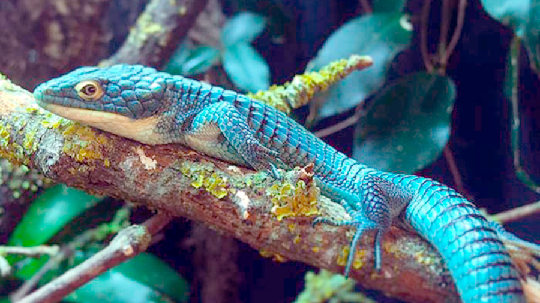

Zoologia
Lagarto: Dragonsito azul
Inicio
Ubicasion
Alimentacion
Peligro de extinsion
¿Como evitar la extincion?
Opiniones
Su alimentacion
Entre sus alimentos preferidos se encuentran los chapulines, cucarachas, tenebrios, etcétera.
